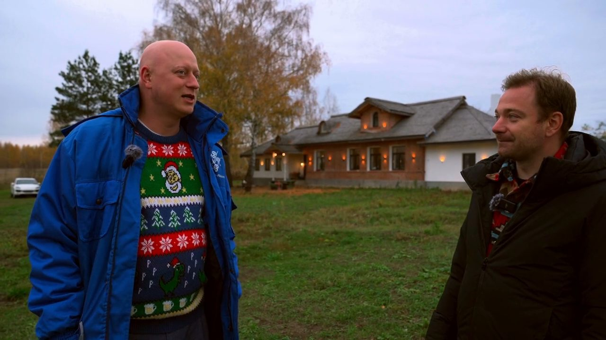
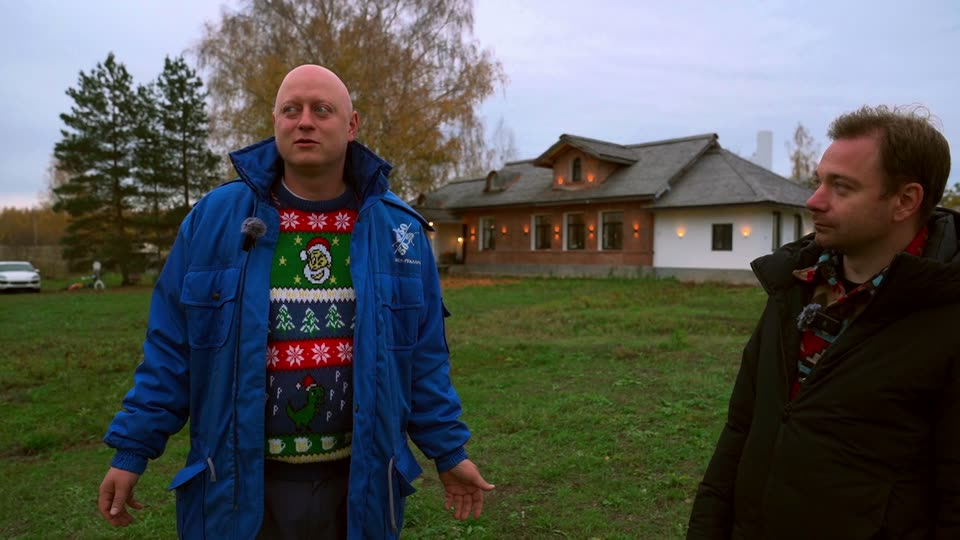
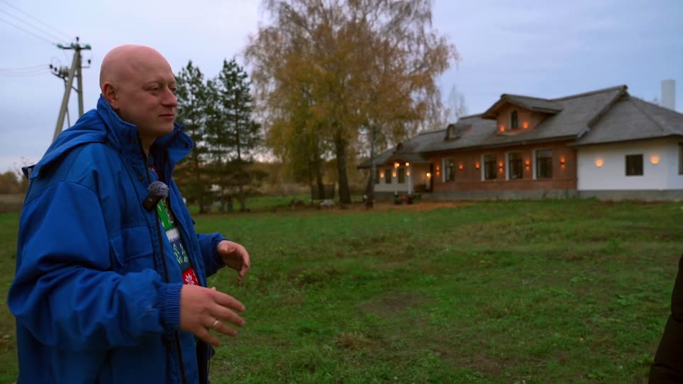
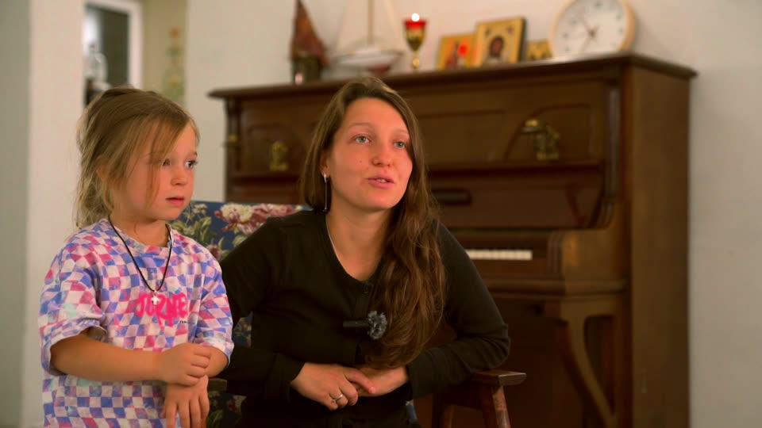
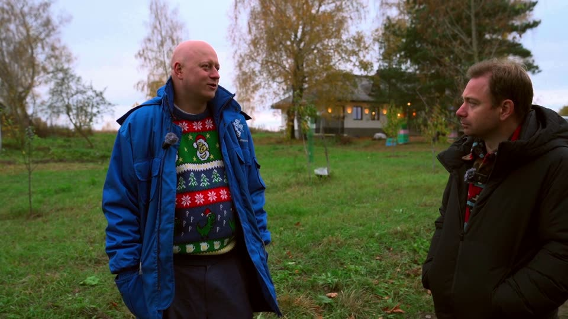
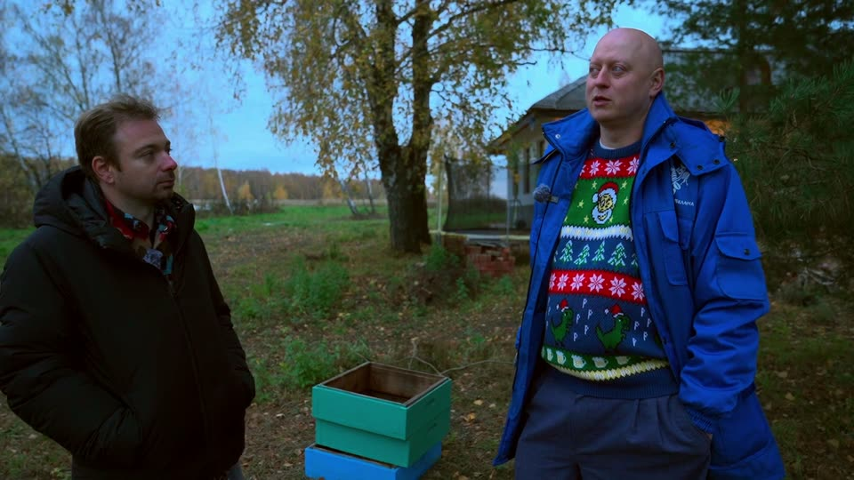
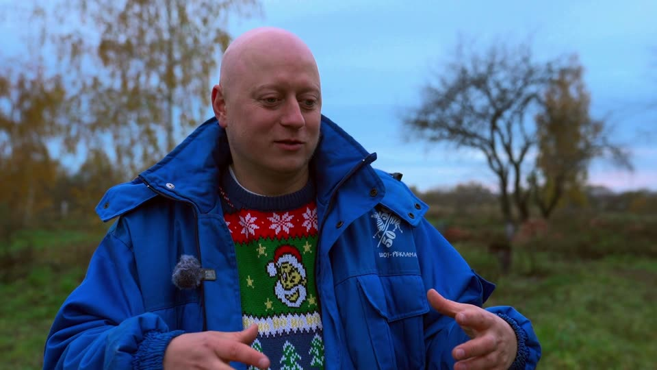

- 112 файлов с камеры
- 10 записей с петличек
- больше 2 часов видео
Ролики для соцсетей
Если тебя нет в сети, тебя нет
Клиенты сегодня приходят из соцсетей. Почти все.
Либо вас там знают, либо бизнес придётся закрывать.
«Форма.ТТ» делает так, чтобы вы были в соцсетях эффектно и с толком. Способов пять, у каждого свои примеры.
01 Монтаж из папки
Отснятое лежит мёртвым грузом? Сделаем из него ролики
С телефона, с мероприятий, со старых съёмок. Присылаете огромную папку или привозите диск - мы делаем из неё нормальные ролики.
От васПапка с материалом
От насМонтаж, титры, обложки
- Присылаете папкуСсылкой на облако или привозите диск.
- МонтируемОтбираем живые моменты и собираем первые ролики.
- Вы вносите правкиСмотрите и говорите, что поменять.
- Решаем, чего не хватаетИногда материала достаточно, иногда нет.доснятьдорисоватьдомонтировать
- Отдаём готовоеВыкладываете у себя.
Пример: фильм «Бояринцево: школа в поле»
Папка с камеры - и готовый фильм с главами
Семья строит школу в поле, где пока нет деревни. Из сырой съёмки собрали интервью-фильм: разговор на прогулке, рассказ жены, хозяйство, финал.
- фильм в Full HD
- вступление, 5 глав и финал
- цвет, звук, титры, музыка







02 Рилсы
Длинные выпуски есть, а коротких нет? Нарежем рилсы
Интервью, подкасты, эфиры. Без короткого формата новые люди вас не находят. Присылаете ссылку, дальше всё делаем сами.
От васСсылка на выпуск
От насВсё остальное
- Присылаете ссылкуНа YouTube, ВК, куда угодно.
- Находим сильные местаМысли, которые цепляют без начала и конца выпуска.
- МонтируемВертикальный кадр, титры, обложка, описание.
- Отдаём готовые рилсыСмотрите, правите, выкладываете.
Из интервью и подкастов
Нажмите, чтобы посмотреть
03 Студия
Снимать нечего и некому? Приезжайте к нам на студию
Свет, звук, камера, цвет - наша забота. Вы говорите о своём деле, мы снимаем и упаковываем.
От васПриехать и говорить
От насСъёмка, монтаж, цвет, обложки
Скоро Выездная съёмка: приедем к вам на предприятие.
- Договариваемся о темахО чём вам есть что сказать.
- Приезжаете на студиюСнимаем разговор на хорошую камеру.
- Монтируем и доводимЦвет, звук, титры - как в кино, а не как с телефона.
- Отдаём роликиС обложками и описаниями.
Снято на нашей студии
Ноябрь 2026, нажмите, чтобы посмотреть
04 Мультфильмы
Про производство в лоб никто смотреть не будет. Мультфильм - будут
Мультфильм начинает с темы, которая цепляет всех, и через неё выводит на вашу компанию. Человек смотрит, подписывается, а потом покупает.
От васРассказать о производстве
От насСценарий, рисунок, голос, монтаж
Пока это пилоты. Так выглядит стиль.
Мультфильма про производство клиента ещё нет - первый может стать вашим.
Пилоты
Нажмите, чтобы посмотреть
05 Под ключ
Когда соцсетей мало: полное сопровождение под ключ
Другой масштаб, другие задачи, другая работа.
PR
Выходы в федеральную прессу
Телевидение
Примеров здесь пока нет. Это направление мы только открываем и не будем показывать чужое за своё.
Что нужно именно вам - обсудим на созвоне.